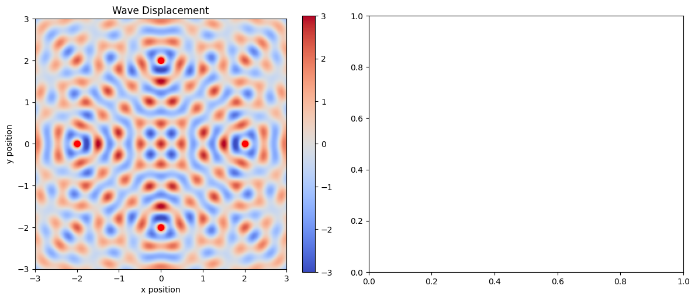

Problem 1
Wave Interference Formulation
Core Wave Equations
Single Source Waveform
For a point source located at \((x_i, y_i)\):
\[
\eta_i(x,y,t) = \frac{A}{\sqrt{r_i}} \cos(kr_i - \omega t + \phi_i)
\]
where: $$ r_i = \sqrt{(x-x_i)^2 + (y-y_i)^2} $$
Key Wave Parameters
| Parameter | Symbol | Equation |
|---|---|---|
| Wavenumber | \(k\) | \(k = \frac{2\pi}{\lambda}\) |
| Angular frequency | \(\omega\) | \(\omega = 2\pi f\) |
| Phase velocity | \(v_p\) | \(v_p = \frac{\omega}{k} = \lambda f\) |

Extended Formulation
Complex Representation
\[
\tilde{\eta}_i(x,y,t) = \frac{A}{\sqrt{r_i}} e^{i(kr_i - \omega t + \phi_i)}
\]
Superposition Principle
For \(N\) sources: $$ \eta_{total}(x,y,t) = \sum_{i=1}^N \eta_i(x,y,t) $$
Phase Difference
Between two sources \(i\) and \(j\): $$ \Delta\phi_{ij} = k(r_i - r_j) + (\phi_i - \phi_j) $$
Interference Conditions
Constructive Interference
When: $$ \Delta\phi_{ij} = 2n\pi \quad (n \in \mathbb{Z}) $$
Destructive Interference
When: $$ \Delta\phi_{ij} = (2n+1)\pi \quad (n \in \mathbb{Z}) $$
Special Case: Two Sources
Resultant wave: $$ \eta_{total} = \frac{2A}{\sqrt{r}} \cos\left(\frac{k\Delta r}{2}\right) \cos\left(kr - \omega t + \bar{\phi}\right) $$ where \(\Delta r = r_1 - r_2\) and \(\bar{\phi} = \frac{\phi_1+\phi_2}{2}\)